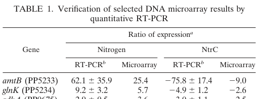

GlnK is the single PII-family signal transduction protein of Pseudomonas putida KT2440. PII proteins are small cytoplasmic homotrimers with a flexible T-loop that integrate cellular nitrogen and carbon/energy status by binding the effector metabolites ATP, ADP and 2-oxoglutarate. GlnK transduces these signals to partner proteins of the nitrogen regulatory (Ntr) system. Its modification state is controlled by GlnD-mediated reversible uridylylation/de-uridylylation at a conserved tyrosine (residue 51), responding to intracellular glutamine levels. In its appropriate state GlnK modulates the kinase/phosphatase balance of the sensor histidine kinase NtrB (NRII/GlnL), thereby controlling the phosphorylation state of the sigma-54-dependent enhancer-binding transcriptional activator NtrC (NRI) and the downstream nitrogen assimilation regulon. The glnK gene lies upstream of and is co-transcribed with the ammonium channel gene amtB (PP_5233), and PII proteins canonically also regulate ammonium uptake through direct interaction with AmtB-type transporters. In KT2440, glnK transcription is itself directly activated by NtrC at a sigma-54 promoter and is strongly induced under nitrogen limitation.
| GO Term | Evidence | Action | Reason |
|---|---|---|---|
|
GO:0000166
nucleotide binding
|
IEA
GO_REF:0000104 |
ACCEPT |
Summary: PII proteins bind the nucleotides ATP and ADP in a cleft between subunits; nucleotide binding is central to their function as energy/nitrogen sensors. This general term is correct but is captured more specifically by the ATP binding annotation below.
Reason: Consistent with PII-family biology and the UniProt Nucleotide-binding keyword; a true molecular property of the protein.
|
|
GO:0005524
ATP binding
|
IEA
GO_REF:0000118 |
ACCEPT |
Summary: PII proteins bind ATP (and ADP) as part of their effector-sensing mechanism; the ATP/ADP ratio is a key allosteric input. This is the more informative specific nucleotide-binding term and represents a core molecular property.
Reason: Well supported by conserved PII structural biology and InterPro/PANTHER family assignment.
|
|
GO:0005829
cytosol
|
IEA
GO_REF:0000118 |
ACCEPT |
Summary: PII proteins are cytoplasmic signal transduction proteins; the default localization for GlnK is the cytosol, where it engages NtrB and other partners. Condition-dependent membrane association with AmtB occurs but the soluble cytosolic pool is the predominant and best-supported localization.
Reason: Consistent with PII-family biology; no contradicting evidence.
|
|
GO:0006351
DNA-templated transcription
|
IEA
GO_REF:0000104 |
REMOVE |
Summary: GlnK is not itself a component of the transcription machinery and does not directly carry out DNA-templated transcription. Its effect on transcription is indirect, via modulation of the NtrB/NtrC two-component system. This term is too general and mischaracterizes GlnK as part of the transcription process rather than a regulator of it; the regulatory aspect is captured by GO:0006355 and GO:0006808.
Reason: Over-broad and not the function of GlnK; it acts on a signaling cascade, not on the transcription reaction itself. The regulation-of-transcription and regulation-of-nitrogen-utilization terms more accurately capture the biology.
|
|
GO:0006355
regulation of DNA-templated transcription
|
IEA
GO_REF:0000104 |
KEEP AS NON CORE |
Summary: By controlling the NtrB/NtrC phosphorelay, GlnK ultimately influences sigma-54-dependent (NtrC-activated) transcription of nitrogen assimilation genes. This indirect regulatory role is accurate, though the nitrogen-specific term GO:0006808 is more biologically informative.
Reason: Correct as a downstream consequence of GlnK signaling, but the regulation of nitrogen utilization term better captures the specific physiological role.
|
|
GO:0006808
regulation of nitrogen utilization
|
IEA
GO_REF:0000120 |
ACCEPT |
Summary: This is the central biological process for GlnK. As the single PII protein of KT2440, it couples nitrogen/energy status to the Ntr regulatory cascade, controlling nitrogen assimilation and ammonium utilization. Strongly supported by the PII family role and by the gene's NtrC-dependent induction under nitrogen limitation.
Reason: Accurately captures the core physiological function of GlnK.
|
|
GO:0030234
enzyme regulator activity
|
IEA
GO_REF:0000120 |
MODIFY |
Summary: GlnK regulates the enzymatic activity of the bifunctional sensor kinase/phosphatase NtrB. The generic enzyme regulator activity term is correct but uninformative; the UniProt protein name ("Activator of NRII(GlnL/NtrB) phosphatase") and PII biology point to a more specific activity, modulation of NtrB's phosphatase activity.
Reason: A more specific molecular function term better captures GlnK's documented role in stimulating the phosphatase activity of NtrB; replacing the generic enzyme regulator activity term improves informativeness.
Proposed replacements:
phosphatase activator activity
|
Q: Does P. putida KT2440 GlnK physically interact with and regulate the ammonium channel AmtB (PP_5233) in a uridylylation-dependent manner, as in enteric bacteria?
Q: Is KT2440 GlnK reversibly uridylylated by GlnD at Tyr51 in vivo, and what is the glutamine/2-oxoglutarate dependence of this modification?
Experiment: Co-purification or bacterial two-hybrid / pull-down assays between GlnK and NtrB, and between GlnK and AmtB, in KT2440 to confirm partner interactions.
Experiment: Mass spectrometry or anti-UMP detection of GlnK uridylylation state across nitrogen-replete and nitrogen-limited conditions, with a glnD mutant control.
The research report should be a detailed narrative explaining the function, biological processes, and localization of the gene product. Citations should be given for all claims.
You should prioritize authoritative reviews and primary scientific literature when conducting research. You can supplement
this with annotations you find in gene/protein databases, but these can be outdated or inaccurate.
We are specifically interested in the primary function of the gene - for enzymes, what reaction is catalyzed, and what is the substrate specificity? For transporters, what is the substrate? For structural proteins or adapters, what is the broader structural role? For signaling molecules, what is the role in the pathway.
We are interested in where in or outside the cell the gene product carries out its function.
We are also interested in the signaling or biochemical pathways in which the gene functions. We are less interested in broad pleiotropic effects, except where these elucidate the precise role.
Include evidence where possible. We are interested in both experimental evidence as well as inference from structure, evolution, or bioinformatic analysis. Precise studies should be prioritized over high-throughput, where available.
The UniProt target Q88CE7 corresponds to glnK / PP_5234 in Pseudomonas putida KT2440 and is described in the KT2440 nitrogen-regulatory literature as the organism’s single PII-like signal transduction protein (i.e., not an enzyme/transport protein). In KT2440, glnK transcription is directly activated by the nitrogen regulator NtrC at a σ\N (σ54)-dependent promoter and requires IHF for open-complex formation, placing glnK within the canonical nitrogen-starvation regulatory program. Quantitative transcriptomics show strong glnK induction under nitrogen limitation. Direct KT2440-specific biochemical evidence for GlnK post-translational modification, interaction with AmtB, or subcellular localization was not found in retrieved texts; these aspects can be inferred at the PII-family level but should be treated explicitly as inference, not direct strain-specific proof. (hervas2009ntrcdependentregulatorynetwork pages 1-2, hervas2008transcriptomeanalysisof pages 2-3, hervas2008transcriptomeanalysisof pages 1-2)
| Claim/Aspect | Evidence summary | Organism/Context | Source (with year) | URL/DOI |
|---|---|---|---|---|
| Identity | Target matches glnK / PP_5234 / UniProt Q88CE7 in Pseudomonas putida KT2440; described as the strain’s single PII-like protein and nitrogen-regulated gene, avoiding confusion with glnK homologs from other species. (hervas2009ntrcdependentregulatorynetwork pages 1-2, hervas2008transcriptomeanalysisof pages 1-2) | P. putida KT2440 | Hervás et al. 2009; Hervás et al. 2008 | https://doi.org/10.1128/jb.00744-09 ; https://doi.org/10.1128/jb.01230-07 |
| Family/domains | The protein belongs to the PII/GlnK family, whose canonical properties include a homotrimeric architecture, flexible T-loops, and sensing of ATP, ADP, and 2-oxoglutarate; these features are consistent with the UniProt domain assignment to the PII family. (ormeno2024structuralandfunctional pages 32-35) | Conserved bacterial/archaeal PII proteins; used to interpret KT2440 GlnK | Ormeno 2024; Ensinck et al. 2024 | https://doi.org/10.6094/unifr/255197 ; https://doi.org/10.3389/fmicb.2024.1366111 |
| Regulation by NtrC | In P. putida KT2440, glnK transcription is directly activated by NtrC. Footprinting identified two contiguous NtrC-binding sites upstream of the glnK promoter, and promoter opening additionally required IHF. This places glnK in an NtrC-controlled nitrogen-starvation response. (hervas2009ntrcdependentregulatorynetwork pages 1-2) | Nitrogen-regulated transcription in KT2440 | Hervás et al. 2009 | https://doi.org/10.1128/jb.00744-09 |
| Operon / neighboring transporter context | The adjacent ammonium transporter gene amtB (PP_5233) is reported as being in the same functional context and is presumed to form an operon with upstream glnK, linking GlnK to ammonium uptake control. (hervas2008transcriptomeanalysisof pages 2-3) | P. putida KT2440 nitrogen assimilation locus | Hervás et al. 2008 | https://doi.org/10.1128/jb.01230-07 |
| Pathway role | KT2440 GlnK is placed in the canonical GlnD → GlnK → NtrB → NtrC signaling cascade controlling nitrogen assimilation genes: GlnD modulates GlnK, GlnK activates NtrB, and NtrB changes NtrC phosphorylation state. (incha2023excavatingthegenome pages 53-60, schmidt2022nitrogenmetabolismin pages 4-6) | Nitrogen-starvation signaling in KT2440 | Schmidt et al. 2022; Incha 2023 | https://doi.org/10.1128/aem.02430-21 ; source URL not available in retrieved metadata |
| Functional class / primary role | GlnK is not an enzyme or transporter; it is a signal-transduction/adaptor protein that couples intracellular nitrogen/energy status to regulation of NtrB/NtrC and likely ammonium transport-related functions, matching the UniProt description “activator of NRII (GlnL/NtrB) phosphatase” at the family level. (hervas2009ntrcdependentregulatorynetwork pages 1-2, atkinson2002contextdependentfunctionsof pages 1-2, ormeno2024structuralandfunctional pages 32-35) | Interpreted from KT2440 data plus conserved PII mechanism | Hervás et al. 2009; Atkinson et al. 2002; Ormeno 2024 | https://doi.org/10.1128/jb.00744-09 ; https://doi.org/10.1128/jb.184.19.5364-5375.2002 ; https://doi.org/10.6094/unifr/255197 |
| PTM | Direct PTM evidence for KT2440 GlnK was not found in the retrieved organism-specific literature, but the KT2440 pathway explicitly includes GlnD, and conserved PII biology indicates reversible uridylylation/deuridylylation as the expected nitrogen-responsive modification controlling NtrB/NtrC signaling. This should be treated as strong family-based inference rather than direct strain-specific biochemical proof. (incha2023excavatingthegenome pages 53-60, schmidt2022nitrogenmetabolismin pages 4-6, ormeno2024structuralandfunctional pages 32-35) | KT2440 inference from pathway membership plus conserved PII mechanism | Schmidt et al. 2022; Incha 2023; Ormeno 2024 | https://doi.org/10.1128/aem.02430-21 ; source URL not available in retrieved metadata ; https://doi.org/10.6094/unifr/255197 |
| Localization | No direct localization experiment for KT2440 GlnK was identified. Given PII-family biology, the default localization is cytosolic, with possible condition-dependent association with membrane transport systems such as AmtB inferred from homologous systems, but not directly demonstrated here for KT2440. (ensinck2024thepiiprotein pages 1-2, ensinck2024thepiiprotein pages 14-15) | Inference from conserved GlnK/Amt systems | Ensinck et al. 2024 | https://doi.org/10.3389/fmicb.2024.1366111 |
| Quantitative expression | Hervás et al. 2008 Table 1 reports glnK expression ratios 9.2, 3.2, 5.7, 4.9, 1.2, 2.6, from RT-PCR/microarray comparisons across nitrogen and NtrC conditions, supporting strong induction under nitrogen limitation and NtrC responsiveness. (hervas2008transcriptomeanalysisof pages 2-3, hervas2008transcriptomeanalysisof media 7d483848) | P. putida KT2440 transcriptomics / validation table | Hervás et al. 2008 | https://doi.org/10.1128/jb.01230-07 |
| Additional transcriptomic context | In a later KT2440 study, glnK was described as upregulated under the tested nitrogen/stationary-phase-related conditions, while NtrC showed strong activation (8.8-fold), reinforcing that glnK participates in nitrogen stress signaling. A specific numeric fold-change for glnK was not given in the excerpt. (mozejkociesielska2017mediumchainlengthpolyhydroxyalkanoatessynthesis pages 9-10) | KT2440 transcriptome under stationary phase / nitrogen-linked response | Możejko-Ciesielska et al. 2017 | https://doi.org/10.1186/s13568-017-0396-z |
| Fitness data | In the KT2440 RB-TnSeq resource, the transposon library had no insertions in glnK, so no direct fitness value/phenotype could be assigned to PP_5234 from that dataset. This is an important limitation for current functional-genetics evidence. (incha2023excavatingthegenome pages 53-60, schmidt2022nitrogenmetabolismin pages 4-6) | P. putida KT2440 pooled mutant fitness assays | Schmidt et al. 2022; Incha 2023 | https://doi.org/10.1128/aem.02430-21 ; source URL not available in retrieved metadata |
| Recent developments relevant to annotation | Recent 2024 PII research reinforces the modern view of GlnK/PII proteins as allosteric metabolite sensors whose partner binding is remodeled by ATP/ADP/2-OG and can regulate transport complexes; this supports annotation of KT2440 GlnK as a dynamic nitrogen-sensing regulator rather than a static structural protein. (li2024allostericregulationof pages 1-2, rozbeh2024invivodetection pages 1-2) | General PII field update, relevant by homology | Li et al. 2024; Rozbeh & Forchhammer 2024 | https://doi.org/10.1073/pnas.2318320121 ; https://doi.org/10.3390/ijms25063409 |
Table: This table summarizes the evidence base for functional annotation of Pseudomonas putida KT2440 GlnK (PP_5234; UniProt Q88CE7). It highlights identity verification, pathway placement, quantitative transcript data, and the current limits of direct experimental evidence such as fitness and localization.
GlnK (a PII-family protein) is a small signal-transduction hub typically forming a homotrimer and using a flexible T-loop to engage partner proteins. PII proteins act as integrators of cellular nitrogen and energy status via direct binding of metabolites and nucleotides—most canonically ATP, ADP, and 2‑oxoglutarate (2‑OG)—which remodels PII conformation and thereby changes partner binding and downstream regulation. (ormeno2024structuralandfunctional pages 32-35, li2024allostericregulationof pages 1-2)
A modern mechanistic model emphasizes:
- ATP/ADP ratio as an energy readout and switch for target binding. (ormeno2024structuralandfunctional pages 32-35)
- 2‑OG as a nitrogen/carbon-balance signal; in several systems, ATP + 2‑OG shifts PII toward partner release while ADP-bound forms preferentially engage targets. (li2024allostericregulationof pages 1-2)
In the classic Gram-negative nitrogen regulation scheme, a PII protein can bind the sensor kinase/phosphatase NtrB (NRII/GlnL) and bias its kinase/phosphatase output to control the phosphorylation state of NtrC (NRI), a σ54-dependent enhancer-binding transcriptional activator. In E. coli, this coupling is strongly modulated by GlnD-mediated uridylylation of PII proteins in response to nitrogen status (glutamine signal). Uridylylation prevents productive binding to NtrB; deuridylylation restores it. (atkinson2002contextdependentfunctionsof pages 1-2, ormeno2024structuralandfunctional pages 32-35)
For KT2440 specifically, functional genomics and regulatory network descriptions place glnK in a GlnD→GlnK→NtrB→NtrC cascade (see §2.2), consistent with UniProt’s “activator of NRII phosphatase” description at the family/mechanism level. (incha2023excavatingthegenome pages 53-60, schmidt2022nitrogenmetabolismin pages 4-6)
Unlike enterobacteria that can encode both glnB (PII) and glnK (PII-like), P. putida KT2440 is described as encoding only a single PII homologue designated glnK. This reduces ambiguity of the gene symbol in this organism and implies that KT2440 GlnK may consolidate functions that are partitioned between PII paralogs in other taxa. (hervas2008transcriptomeanalysisof pages 1-2, hervas2009ntrcdependentregulatorynetwork pages 1-2)
A key KT2440-specific mechanistic result is that glnK transcription is directly NtrC-activated:
- Two contiguous NtrC binding sites were identified upstream of the NtrC-dependent glnK promoter by footprinting.
- In vitro transcription/open-complex formation at the glnK promoter required both NtrC and IHF (integration host factor).
- Authors propose an indirect feedback autoregulation architecture involving glnK and NtrC. (hervas2009ntrcdependentregulatorynetwork pages 1-2)
This provides strong primary evidence that glnK is embedded in the σ54-dependent nitrogen stress regulon in KT2440. (hervas2009ntrcdependentregulatorynetwork pages 1-2)
Transcriptome validation work notes that amtB (PP_5233) is presumed to be in an operon with upstream glnK, and that amtB is NtrC activated under nitrogen-responsive conditions. This links KT2440 glnK to ammonium acquisition physiology, even though a KT2440-specific physical GlnK–AmtB interaction assay was not retrieved here. (hervas2008transcriptomeanalysisof pages 2-3)
Functional genomics resources for KT2440 nitrogen metabolism explicitly describe the canonical cascade:
- GlnD (PP_1589) modulates GlnK activity.
- GlnK then activates NtrB (PP_5047).
- NtrB controls the phosphorylation state of NtrC (PP_5048), which in turn regulates nitrogen assimilation genes. (incha2023excavatingthegenome pages 53-60, schmidt2022nitrogenmetabolismin pages 4-6)
This cascade is consistent with the widely conserved PII/NtrBC control logic described in classical models. (atkinson2002contextdependentfunctionsof pages 1-2, ormeno2024structuralandfunctional pages 32-35)
In KT2440, Table 1 of Hervás et al. (2008; publication date: Jan 2008; URL: https://doi.org/10.1128/jb.01230-07) reports glnK (PP_5234) expression ratios across nitrogen and NtrC-dependent comparisons.
The glnK row in Table 1 reports the numeric values:
9.2, 3.2, 5.7, 4.9, 1.2, 2.6 (RT‑PCR and microarray comparisons across nitrogen and NtrC conditions), supporting strong nitrogen-responsive induction and NtrC-dependent regulation in vivo. (hervas2008transcriptomeanalysisof pages 2-3, hervas2008transcriptomeanalysisof media 7d483848)
In a KT2440 relA/spoT mutant transcriptome/bioprocess study (May 2017; URL: https://doi.org/10.1186/s13568-017-0396-z), glnK is described as upregulated, and NtrC is reported as strongly activated in stationary phase (8.8-fold). This is consistent with glnK being an NtrC-regulated nitrogen-stress gene, though a numeric glnK fold-change is not provided in the retrieved excerpt. (mozejkociesielska2017mediumchainlengthpolyhydroxyalkanoatessynthesis pages 9-10)
A major limitation for gene-essentiality/phenotype quantification is that the KT2440 RB-TnSeq library used in a systematic nitrogen substrate study had no transposon insertions in glnK, preventing direct pooled-fitness estimation for PP_5234 in that dataset. (schmidt2022nitrogenmetabolismin pages 4-6)
No KT2440-specific localization experiment (e.g., cell fractionation, microscopy, fluorescent fusion) was retrieved.
At the family level, PII proteins are generally cytosolic and can form condition-dependent complexes with membrane transporters (classically AmtB) in other systems; 2024 work in mycobacteria demonstrates a PII protein can interact with the C-terminal domain of an Amt ammonium transporter and that loss of PII can impair growth on nitrate/nitrite. These results support the plausibility of transporter-associated regulation, but do not directly establish localization/complex formation for KT2440 GlnK. (ensinck2024thepiiprotein pages 1-2, ensinck2024thepiiprotein pages 14-15)
No direct KT2440 biochemical measurement of GlnK uridylylation (or other PTMs) was retrieved.
However, KT2440 is described as encoding the upstream regulator GlnD, and the KT2440 cascade description (GlnD→GlnK→NtrB→NtrC) aligns with the widely conserved mechanism where GlnD-mediated uridylylation/deuridylylation transduces nitrogen sufficiency signals to PII proteins, controlling NtrB/NtrC output (classic evidence from E. coli and general mechanistic summaries). For KT2440, this should be treated as strong mechanistic inference based on pathway membership and conservation, not direct strain-specific proof. (ormeno2024structuralandfunctional pages 32-35, incha2023excavatingthegenome pages 53-60, schmidt2022nitrogenmetabolismin pages 4-6)
Although KT2440-specific glnK work in the retrieved corpus is largely pre-2020, several 2023–2024 advances sharpen the field’s mechanistic understanding of PII/PII-like proteins and therefore strengthen evidence-based inference for GlnK function.
A 2024 PNAS study (Mar 2024; URL: https://doi.org/10.1073/pnas.2318320121) reports cryo-EM structures showing PII can bind the nitrate transporter complex (NrtBCD) and narrow the substrate translocation channel to lock an inhibited transporter conformation. Importantly, this work highlights a mechanistic nuance: PII regulation can occur via binding surfaces beyond the canonical T-loop and can yield asymmetric allosteric inhibition. This expands the set of plausible PII-mediated regulatory modes beyond classical NtrBC and AmtB paradigms. (li2024allostericregulationof pages 1-2)
An IJMS 2024 study (Mar 2024; URL: https://doi.org/10.3390/ijms25063409) implements NanoBiT protein-fragment complementation to monitor PII–partner interactions in vivo and demonstrates that a PII-based interaction pair can sensitively report metabolic shifts associated with nitrogen upshift/depletion in real time. This supports the expert view of PII proteins as dynamic interaction switches whose binding equilibria can track metabolic state on short timescales—relevant when reasoning about GlnK’s role as an adaptor rather than an enzyme. (rozbeh2024invivodetection pages 1-2)
A 2024 Frontiers in Microbiology paper (Mar 2024; URL: https://doi.org/10.3389/fmicb.2024.1366111) provides experimental evidence that a mycobacterial PII protein can interact with an ammonium transporter domain and that deletion of PII can cause growth defects on nitrate/nitrite with nitrite accumulation. While taxonomically distinct from Pseudomonas, it strengthens the generality of PII-linked control of nitrogen uptake/assimilation and highlights that single-PII organisms can exhibit multi-pathway nitrogen phenotypes. (ensinck2024thepiiprotein pages 1-2)
KT2440 is widely used as a biotechnological chassis (bioremediation/biotransformation) and as a model for biodegradation processes. Nitrogen regulation is practically important because NtrC can activate alternative nitrogen assimilation pathways and can also repress carbon catabolism under nitrogen limitation, potentially diverting resources away from product formation or degradation pathways depending on cultivation conditions. NtrC has been implicated in nitrogen regulation of atrazine biodegradation, showing that nitrogen regulatory state can directly alter biodegradation phenotypes. Since KT2440 glnK is NtrC-controlled and upstream of NtrBC control logic, it is part of the regulatory layer that can influence these process outcomes. (hervas2008transcriptomeanalysisof pages 1-2, hervas2009ntrcdependentregulatorynetwork pages 1-2)
A systematic KT2440 nitrogen-metabolism functional genomics study emphasizes that many products/precursors contain nitrogen and that understanding nitrogen assimilation genetics can help redirect flux toward desired products; it also lists multiple applied contexts for KT2440 in metabolic engineering and biosensing (e.g., lactam biosensors, pathway rewiring at scale). Although these applications are not glnK-specific in the retrieved excerpt, they frame nitrogen regulation—including NtrBC/PII logic—as a design constraint for robust production phenotypes across media and scales. (schmidt2022nitrogenmetabolismin pages 1-2)
GlnK (PP_5234; UniProt Q88CE7) is best annotated as a PII-family nitrogen/energy status signaling adaptor that participates in the nitrogen-starvation regulatory cascade and couples metabolic state to NtrBC-controlled transcription.
Evidence directly in KT2440 supports:
- Direct transcriptional activation of glnK by NtrC, requiring mapped NtrC binding sites and IHF for promoter opening. (hervas2009ntrcdependentregulatorynetwork pages 1-2)
- Strong induction of glnK under nitrogen limitation with reported expression ratios in validated transcriptomics. (hervas2008transcriptomeanalysisof pages 2-3, hervas2008transcriptomeanalysisof media 7d483848)
- Placement in the canonical GlnD→GlnK→NtrB→NtrC pathway (functional genomics narrative). (incha2023excavatingthegenome pages 53-60, schmidt2022nitrogenmetabolismin pages 4-6)
GlnK is not an enzyme with a catalytic reaction; its “substrates” are effectively its bound effectors (ATP/ADP/2‑OG; likely glutamine state via upstream GlnD control in many bacteria). These effectors tune GlnK conformation and partner interactions, consistent with the PII-family definition. (ormeno2024structuralandfunctional pages 32-35, li2024allostericregulationof pages 1-2)
The most conservative evidence-based statement for KT2440 is that GlnK acts in the cytoplasmic regulatory network controlling NtrBC-dependent transcription. Membrane-associated regulation via AmtB is plausible by gene neighborhood and broad PII biology but remains not directly demonstrated for KT2440 in the retrieved texts. (hervas2008transcriptomeanalysisof pages 2-3, ensinck2024thepiiprotein pages 1-2)
Hervás et al. (2008) Table 1 provides the quantitative glnK expression ratios used above. (hervas2008transcriptomeanalysisof media 7d483848)
References
(hervas2009ntrcdependentregulatorynetwork pages 1-2): Ana B. Hervás, Inés Canosa, Richard Little, Ray Dixon, and Eduardo Santero. Ntrc-dependent regulatory network for nitrogen assimilation in pseudomonas putida. Oct 2009. URL: https://doi.org/10.1128/jb.00744-09, doi:10.1128/jb.00744-09. This article has 94 citations and is from a peer-reviewed journal.
(hervas2008transcriptomeanalysisof pages 2-3): Ana B. Hervás, Inés Canosa, and Eduardo Santero. Transcriptome analysis of pseudomonas putida in response to nitrogen availability. Journal of Bacteriology, 190:416-420, Jan 2008. URL: https://doi.org/10.1128/jb.01230-07, doi:10.1128/jb.01230-07. This article has 114 citations and is from a peer-reviewed journal.
(hervas2008transcriptomeanalysisof pages 1-2): Ana B. Hervás, Inés Canosa, and Eduardo Santero. Transcriptome analysis of pseudomonas putida in response to nitrogen availability. Journal of Bacteriology, 190:416-420, Jan 2008. URL: https://doi.org/10.1128/jb.01230-07, doi:10.1128/jb.01230-07. This article has 114 citations and is from a peer-reviewed journal.
(ormeno2024structuralandfunctional pages 32-35): Fernando Jose Ormeno. Structural and functional characterization of the amt2-glnk2 complex from archaeoglobus fulgidus. Jan 2024. URL: https://doi.org/10.6094/unifr/255197, doi:10.6094/unifr/255197. This article has 0 citations.
(incha2023excavatingthegenome pages 53-60): MR Incha. Excavating the genome mine of pseudomonas putida kt2440. Unknown journal, 2023.
(schmidt2022nitrogenmetabolismin pages 4-6): Matthias Schmidt, Allison N. Pearson, Matthew R. Incha, Mitchell G. Thompson, Edward E. K. Baidoo, Ramu Kakumanu, Aindrila Mukhopadhyay, Patrick M. Shih, Adam M. Deutschbauer, Lars M. Blank, and Jay D. Keasling. Nitrogen metabolism in pseudomonas putida: functional analysis using random barcode transposon sequencing. Applied and Environmental Microbiology, Apr 2022. URL: https://doi.org/10.1128/aem.02430-21, doi:10.1128/aem.02430-21. This article has 36 citations and is from a peer-reviewed journal.
(atkinson2002contextdependentfunctionsof pages 1-2): Mariette R. Atkinson, Timothy A. Blauwkamp, and Alexander J. Ninfa. Context-dependent functions of the pii and glnk signal transduction proteins in escherichia coli. Journal of Bacteriology, 184:5364-5375, Oct 2002. URL: https://doi.org/10.1128/jb.184.19.5364-5375.2002, doi:10.1128/jb.184.19.5364-5375.2002. This article has 72 citations and is from a peer-reviewed journal.
(ensinck2024thepiiprotein pages 1-2): Delfina Ensinck, Edileusa C. M. Gerhardt, Lara Rollan, Luciano F. Huergo, Hugo Gramajo, and Lautaro Diacovich. The pii protein interacts with the amt ammonium transport and modulates nitrate/nitrite assimilation in mycobacteria. Frontiers in Microbiology, Mar 2024. URL: https://doi.org/10.3389/fmicb.2024.1366111, doi:10.3389/fmicb.2024.1366111. This article has 6 citations and is from a peer-reviewed journal.
(ensinck2024thepiiprotein pages 14-15): Delfina Ensinck, Edileusa C. M. Gerhardt, Lara Rollan, Luciano F. Huergo, Hugo Gramajo, and Lautaro Diacovich. The pii protein interacts with the amt ammonium transport and modulates nitrate/nitrite assimilation in mycobacteria. Frontiers in Microbiology, Mar 2024. URL: https://doi.org/10.3389/fmicb.2024.1366111, doi:10.3389/fmicb.2024.1366111. This article has 6 citations and is from a peer-reviewed journal.
(hervas2008transcriptomeanalysisof media 7d483848): Ana B. Hervás, Inés Canosa, and Eduardo Santero. Transcriptome analysis of pseudomonas putida in response to nitrogen availability. Journal of Bacteriology, 190:416-420, Jan 2008. URL: https://doi.org/10.1128/jb.01230-07, doi:10.1128/jb.01230-07. This article has 114 citations and is from a peer-reviewed journal.
(mozejkociesielska2017mediumchainlengthpolyhydroxyalkanoatessynthesis pages 9-10): Justyna Mozejko-Ciesielska, Dorota Dabrowska, Agnieszka Szalewska-Palasz, and Slawomir Ciesielski. Medium-chain-length polyhydroxyalkanoates synthesis by pseudomonas putida kt2440 rela/spot mutant: bioprocess characterization and transcriptome analysis. AMB Express, May 2017. URL: https://doi.org/10.1186/s13568-017-0396-z, doi:10.1186/s13568-017-0396-z. This article has 34 citations and is from a peer-reviewed journal.
(li2024allostericregulationof pages 1-2): Bo Li, Xiao-Qian Wang, Qin-Yao Li, Da Xu, Jing Li, Wen-Tao Hou, Yuxing Chen, Yong-Liang Jiang, and Cong-Zhao Zhou. Allosteric regulation of nitrate transporter nrt via the signaling protein pii. Proceedings of the National Academy of Sciences of the United States of America, Mar 2024. URL: https://doi.org/10.1073/pnas.2318320121, doi:10.1073/pnas.2318320121. This article has 16 citations and is from a highest quality peer-reviewed journal.
(rozbeh2024invivodetection pages 1-2): Rokhsareh Rozbeh and Karl Forchhammer. In vivo detection of metabolic fluctuations in real time using the nanobit technology based on pii signalling protein interactions. International Journal of Molecular Sciences, 25:3409, Mar 2024. URL: https://doi.org/10.3390/ijms25063409, doi:10.3390/ijms25063409. This article has 8 citations.
(schmidt2022nitrogenmetabolismin pages 1-2): Matthias Schmidt, Allison N. Pearson, Matthew R. Incha, Mitchell G. Thompson, Edward E. K. Baidoo, Ramu Kakumanu, Aindrila Mukhopadhyay, Patrick M. Shih, Adam M. Deutschbauer, Lars M. Blank, and Jay D. Keasling. Nitrogen metabolism in pseudomonas putida: functional analysis using random barcode transposon sequencing. Applied and Environmental Microbiology, Apr 2022. URL: https://doi.org/10.1128/aem.02430-21, doi:10.1128/aem.02430-21. This article has 36 citations and is from a peer-reviewed journal.

id: Q88CE7
gene_symbol: glnK
product_type: PROTEIN
status: DRAFT
taxon:
id: NCBITaxon:160488
label: Pseudomonas putida (strain ATCC 47054 / DSM 6125 / CFBP 8728 / NCIMB 11950 / KT2440)
description: GlnK is the single PII-family signal transduction protein of Pseudomonas putida KT2440. PII proteins are small cytoplasmic homotrimers with a flexible T-loop that integrate cellular nitrogen and carbon/energy status by binding the effector metabolites ATP, ADP and 2-oxoglutarate. GlnK transduces these signals to partner proteins of the nitrogen regulatory (Ntr) system. Its modification state is controlled by GlnD-mediated reversible uridylylation/de-uridylylation at a conserved tyrosine (residue 51), responding to intracellular glutamine levels. In its appropriate state GlnK modulates the kinase/phosphatase balance of the sensor histidine kinase NtrB (NRII/GlnL), thereby controlling the phosphorylation state of the sigma-54-dependent enhancer-binding transcriptional activator NtrC (NRI) and the downstream nitrogen assimilation regulon. The glnK gene lies upstream of and is co-transcribed with the ammonium channel gene amtB (PP_5233), and PII proteins canonically also regulate ammonium uptake through direct interaction with AmtB-type transporters. In KT2440, glnK transcription is itself directly activated by NtrC at a sigma-54 promoter and is strongly induced under nitrogen limitation.
existing_annotations:
- term:
id: GO:0000166
label: nucleotide binding
evidence_type: IEA
original_reference_id: GO_REF:0000104
qualifier: enables
review:
summary: PII proteins bind the nucleotides ATP and ADP in a cleft between subunits; nucleotide binding is central to their function as energy/nitrogen sensors. This general term is correct but is captured more specifically by the ATP binding annotation below.
action: ACCEPT
reason: Consistent with PII-family biology and the UniProt Nucleotide-binding keyword; a true molecular property of the protein.
- term:
id: GO:0005524
label: ATP binding
evidence_type: IEA
original_reference_id: GO_REF:0000118
qualifier: enables
review:
summary: PII proteins bind ATP (and ADP) as part of their effector-sensing mechanism; the ATP/ADP ratio is a key allosteric input. This is the more informative specific nucleotide-binding term and represents a core molecular property.
action: ACCEPT
reason: Well supported by conserved PII structural biology and InterPro/PANTHER family assignment.
- term:
id: GO:0005829
label: cytosol
evidence_type: IEA
original_reference_id: GO_REF:0000118
qualifier: located_in
review:
summary: PII proteins are cytoplasmic signal transduction proteins; the default localization for GlnK is the cytosol, where it engages NtrB and other partners. Condition-dependent membrane association with AmtB occurs but the soluble cytosolic pool is the predominant and best-supported localization.
action: ACCEPT
reason: Consistent with PII-family biology; no contradicting evidence.
- term:
id: GO:0006351
label: DNA-templated transcription
evidence_type: IEA
original_reference_id: GO_REF:0000104
qualifier: involved_in
review:
summary: GlnK is not itself a component of the transcription machinery and does not directly carry out DNA-templated transcription. Its effect on transcription is indirect, via modulation of the NtrB/NtrC two-component system. This term is too general and mischaracterizes GlnK as part of the transcription process rather than a regulator of it; the regulatory aspect is captured by GO:0006355 and GO:0006808.
action: REMOVE
reason: Over-broad and not the function of GlnK; it acts on a signaling cascade, not on the transcription reaction itself. The regulation-of-transcription and regulation-of-nitrogen-utilization terms more accurately capture the biology.
- term:
id: GO:0006355
label: regulation of DNA-templated transcription
evidence_type: IEA
original_reference_id: GO_REF:0000104
qualifier: involved_in
review:
summary: By controlling the NtrB/NtrC phosphorelay, GlnK ultimately influences sigma-54-dependent (NtrC-activated) transcription of nitrogen assimilation genes. This indirect regulatory role is accurate, though the nitrogen-specific term GO:0006808 is more biologically informative.
action: KEEP_AS_NON_CORE
reason: Correct as a downstream consequence of GlnK signaling, but the regulation of nitrogen utilization term better captures the specific physiological role.
- term:
id: GO:0006808
label: regulation of nitrogen utilization
evidence_type: IEA
original_reference_id: GO_REF:0000120
qualifier: involved_in
review:
summary: This is the central biological process for GlnK. As the single PII protein of KT2440, it couples nitrogen/energy status to the Ntr regulatory cascade, controlling nitrogen assimilation and ammonium utilization. Strongly supported by the PII family role and by the gene's NtrC-dependent induction under nitrogen limitation.
action: ACCEPT
reason: Accurately captures the core physiological function of GlnK.
- term:
id: GO:0030234
label: enzyme regulator activity
evidence_type: IEA
original_reference_id: GO_REF:0000120
qualifier: enables
review:
summary: GlnK regulates the enzymatic activity of the bifunctional sensor kinase/phosphatase NtrB. The generic enzyme regulator activity term is correct but uninformative; the UniProt protein name ("Activator of NRII(GlnL/NtrB) phosphatase") and PII biology point to a more specific activity, modulation of NtrB's phosphatase activity.
action: MODIFY
reason: A more specific molecular function term better captures GlnK's documented role in stimulating the phosphatase activity of NtrB; replacing the generic enzyme regulator activity term improves informativeness.
proposed_replacement_terms:
- id: GO:0019211
label: phosphatase activator activity
core_functions:
- description: PII-family signal transduction protein that senses cellular nitrogen and energy status through binding of ATP, ADP and 2-oxoglutarate and through GlnD-dependent reversible uridylylation, and relays this status to the nitrogen regulatory two-component system.
supported_by:
- reference_id: file:PSEPK/glnK/glnK-deep-research-falcon.md
supporting_text: GlnK (a PII-family protein) is a small signal-transduction hub typically forming a homotrimer and using a flexible T-loop to engage partner proteins; PII proteins act as integrators of cellular nitrogen and energy status via direct binding of metabolites and nucleotides, most canonically ATP, ADP, and 2-oxoglutarate.
molecular_function:
id: GO:0005524
label: ATP binding
locations:
- id: GO:0005829
label: cytosol
- description: Modulates the kinase/phosphatase activity of the sensor histidine kinase NtrB (NRII/GlnL), thereby controlling the phosphorylation state of the response regulator NtrC and the sigma-54-dependent transcription of nitrogen assimilation genes, regulating nitrogen utilization.
supported_by:
- reference_id: file:PSEPK/glnK/glnK-deep-research-falcon.md
supporting_text: GlnK is best annotated as a PII-family nitrogen/energy status signaling adaptor that participates in the nitrogen-starvation regulatory cascade and couples metabolic state to NtrBC-controlled transcription; KT2440 places glnK in a GlnD->GlnK->NtrB->NtrC cascade.
molecular_function:
id: GO:0019211
label: phosphatase activator activity
directly_involved_in:
- id: GO:0006808
label: regulation of nitrogen utilization
proposed_new_terms: []
suggested_questions:
- question: Does P. putida KT2440 GlnK physically interact with and regulate the ammonium channel AmtB (PP_5233) in a uridylylation-dependent manner, as in enteric bacteria?
- question: Is KT2440 GlnK reversibly uridylylated by GlnD at Tyr51 in vivo, and what is the glutamine/2-oxoglutarate dependence of this modification?
suggested_experiments:
- description: Co-purification or bacterial two-hybrid / pull-down assays between GlnK and NtrB, and between GlnK and AmtB, in KT2440 to confirm partner interactions.
- description: Mass spectrometry or anti-UMP detection of GlnK uridylylation state across nitrogen-replete and nitrogen-limited conditions, with a glnD mutant control.
references:
- id: GO_REF:0000104
title: Electronic Gene Ontology annotations created by transferring manual GO annotations between related proteins based on shared sequence features
findings: []
- id: GO_REF:0000118
title: TreeGrafter-generated GO annotations
findings: []
- id: GO_REF:0000120
title: Combined Automated Annotation using Multiple IEA Methods
findings: []
- id: file:PSEPK/glnK/glnK-deep-research-falcon.md
title: Deep research report on glnK (PP_5234; UniProt Q88CE7) in Pseudomonas putida KT2440
findings: []
- id: PMID:12534463
title: Complete genome sequence and comparative analysis of the metabolically versatile Pseudomonas putida KT2440
findings: []
reference_review:
relevance: MEDIUM
correctness: VERIFIED
review_notes: KT2440 genome reference (Nelson et al. 2002, Environ Microbiol) establishing the locus/gene assignment.
{kind=link}